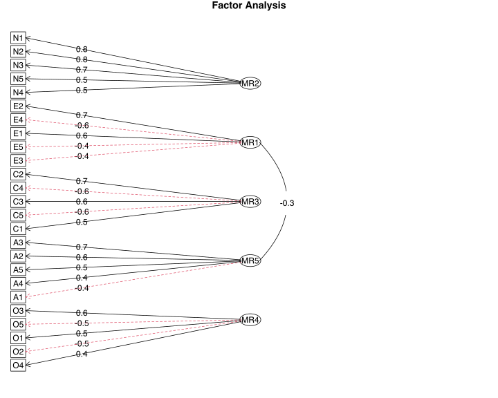
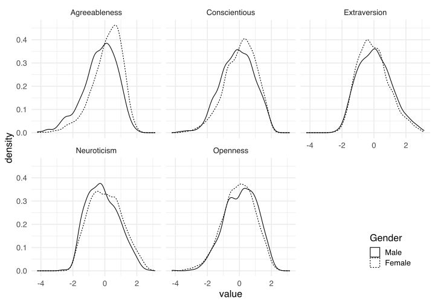

mifa is an R package that implements multiple imputation of covariance matrices to allow to perform factor analysis on incomplete data. It works as follows:
Impute missing values multiple times using Multivariate Imputation with Chained Equations (MICE) from the mice package.
Combine the covariance matrices of the imputed data sets into a single covariance matrix using Rubin’s rules[1]
Use the combined covariance matrix for exploratory factor analysis.
mifa also provides two types of confidence intervals for the variance explained by different numbers of principal components: Fieller confidence intervals (parametric) for larger samples[2] and bootstrapped confidence intervals (nonparametric) for smaller samples.[3]
For more information about the method, see:
Nassiri, V., Lovik, A., Molenberghs, G., Verbeke, G. (2018). On using multiple imputation for exploratory factor analysis of incomplete data. Behavior Research Methods 50, 501–517. doi: 10.3758/s13428-017-1013-4
Note: The paper was accompanied by an implementation in R, and this package emerged from it. The repository appears to have been abandoned by the authors, but you can still find it here.
Installation
Install from CRAN with:
install.packages("mifa")Or install the development version from Github with:
# install.packages("devtools")
devtools::install_github("teebusch/mifa")Usage
Example Data
For this example we use the bfi data set from the psych package. It contains 2,800 subjects’ answers to 25 personality self-report items and 3 demographic variables (sex, education, and age). Each of the 25 personality questions is meant to tap into one of the “Big 5” personality factors, as indicated by their names: Openness, Conscientiousness, Agreeableness, , Extraversion, Neuroticism. There are missing responses for most items. Instead of dropping the incomplete cases from the analysis, we will use mifa to impute them, and then perform a factor analysis on the imputed covariance matrix.
Imputing the Covariance Matrix
First, we use mifa() to impute the covariance matrix and get an idea how many factors we should use. We use the cov_vars argument to tell mifa to use gender, education, and age for the imputations, but exclude them from the covariance matrix:
library(mifa)
library(psych)
mi <- mifa(
data = bfi,
cov_vars = -c(gender, education, age),
n_pc = 2:8,
ci = "fieller",
print = FALSE
)
mi
#> Imputed covariance matrix of 25 variables
#>
#> Variable: A1 A2 A3 A4 A5 C1 C2 C3 C4 C5 E1 E2 E3 E4 E5 N1 N2 N3 N4 N5 O1 O2 O3 O4 O5
#> N Imputed: 16 27 26 19 16 21 24 20 26 16 23 16 25 9 21 22 21 11 36 29 22 0 28 14 20
#>
#> Number of MICE imputations: 5
#> Additional variables used for imputations:
#> gender education age
#>
#> Cumulative proportion of variance explained by n principal components:
#>
#> n prop Fieller CI
#> 2 0.33 [0.32, 0.34]
#> 3 0.41 [0.40, 0.42]
#> 4 0.48 [0.47, 0.49]
#> 5 0.54 [0.53, 0.55]
#> 6 0.59 [0.58, 0.59]
#> 7 0.62 [0.61, 0.63]
#> 8 0.66 [0.65, 0.66]Factor Analysis
It looks like the first 5 principal components explain more than half of the variance in the responses, so we perform a factor analysis with 5 factors, using the fa() function from the psych package. We can get the imputed covariance matrix of our data from mi$cov_combined. From there on, it’s business as usual.
The factor diagram shows that the five factors correspond nicely to the 5 types of questions:
fa.diagram(fit)
We can add the factor scores to the original data, in order to explore group differences. Because we need complete data to calculate factor scores, we first impute a single data set with mice:
data_imp <- mice::complete(mice::mice(bfi, 1, print = FALSE))
fct_scores <- data.frame(factor.scores(data_imp[, 1:25], fit)$scores)
data_imp <- data.frame(
Gender = factor(data_imp$gender),
Extraversion = fct_scores$MR1,
Neuroticism = fct_scores$MR2,
Conscientious = fct_scores$MR3,
Openness = fct_scores$MR4,
Agreeableness = fct_scores$MR5
)
levels(data_imp$Gender) <- c("Male", "Female")Then we can visualize the group differences:
library(ggplot2)
library(tidyr)
data_imp2 <- tidyr::pivot_longer(data_imp, -Gender, "factor")
ggplot(data_imp2) +
geom_density(aes(value, linetype = Gender)) +
facet_wrap(~ factor, nrow = 2) +
theme(legend.position = c(.9, .1))
Further Reading
[1] Rubin D. B. Multiple imputation for nonresponse in surveys (2004). John Wiley & Sons.
[2] Fieller, E. C. (1954). Some problems in interval estimation. Journal of the Royal Statistical Society. Series B (Methodological): 175-185.
[3] Shao, J. & Sitter, R. R. (1996). Bootstrap for imputed survey data. Journal of the American Statistical Association 91.435 (1996): 1278-1288. doi: 10.1080/01621459.1996.10476997